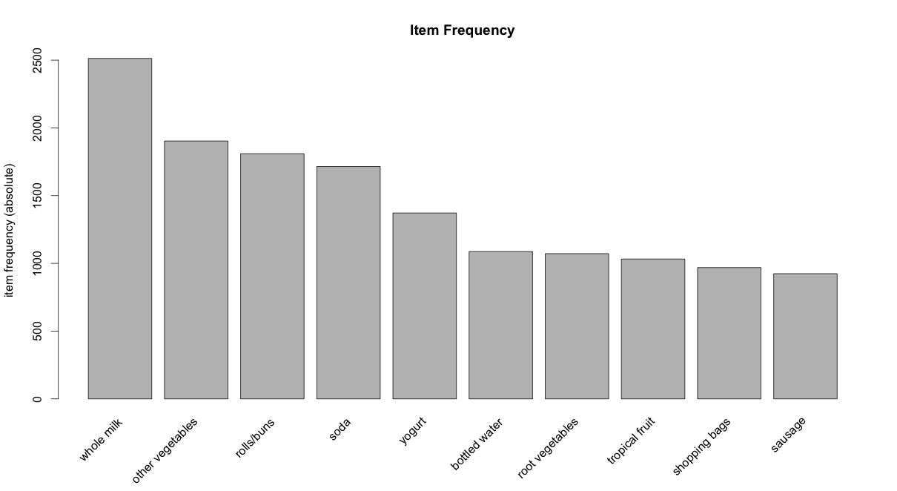

Association Mining (Market Basket Analysis)
Association mining is commonly used to make product recommendations by identifying products that are frequently bought together. But, if you are not careful, the rules can give misleading results in certain cases.
Association mining is usually done on transactions data from a retail market or from an online e-commerce store. Since most transactions data is large, the apriori algorithm makes it easier to find these patterns or rules quickly.
So, What is a rule?
A rule is a notation that represents which item/s is frequently bought with what item/s. It has an LHS and an RHS part and can be represented as follows:
itemset A => itemset B
This means, the item/s on the right were frequently purchased along with items on the left.
How to measure the strength of a rule?
The apriori() generates the most relevent set of rules from a given transaction data. It also shows the support, confidence and lift of those rules. These three measure can be used to decide the relative strength of the rules. So what do these terms mean?
Lets consider the rule A => B in order to compute these metrics.
$$Support = \frac{Number\ of\ transactions\ with\ both\ A\ and\ B}{Total\ number\ of\ transactions} = P\left(A \cap B\right)$$
$$Confidence = \frac{Number\ of\ transactions\ with\ both\ A\ and\ B}{Total\ number\ of\ transactions\ with\ A} = \frac{P\left(A \cap B\right)}{P\left(A\right)}$$
$$Expected Confidence = \frac{Number\ of\ transactions\ with\ B}{Total\ number\ of\ transactions} = P\left(B\right)$$
$$Lift = \frac{Confidence}{Expected\ Confidence} = \frac{P\left(A \cap B\right)}{P\left(A\right).P\left(B\right)}$$
Lift is the factor by which, the co-occurence of A and B exceeds the expected probability of A and B co-occuring, had they been independent. So, higher the lift, higher the chance of A and B occurring together.
Lets see how to get the rules, confidence, lift etc using the arules package in R.
Example
Transactions data
Lets play with the Groceries data that comes with the arules pkg. Unlike dataframe, using head(Groceries) does not display the transaction items in the data. To view the transactions, use the inspect() function instead.
Since association mining deals with transactions, the data has to be converted to one of class transactions, made available in R through the arules pkg. This is a necessary step because the apriori() function accepts transactions data of class transactions only.
library(arules)
class(Groceries)
#> [1] "transactions"
#> attr(,"package")
#> [1] "arules"
inspect(head(Groceries, 3))
#> items
#> 1 {citrus fruit,
#> semi-finished bread,
#> margarine,
#> ready soups}
#> 2 {tropical fruit,
#> yogurt,
#> coffee}
#> 3 {whole milk} If you have to read data from a file as a transactions data, use read.transactions().
tdata <- read.transactions("transactions_data.txt", sep="\t")If you already have your transactions stored as a dataframe, you could convert it to class transactions as follows,
tData <- as (myDataFrame, "transactions") # convert to 'transactions' classHere are couple more utility functions that are good to know:
size(head(Groceries)) # number of items in each observation
#> [1] 4 3 1 4 4 5
LIST(head(Groceries, 3)) # convert 'transactions' to a list, note the LIST in CAPS
#> [[1]]
#> [1] "citrus fruit" "semi-finished bread" "margarine"
#> [4] "ready soups"
#>
#> [[2]]
#> [1] "tropical fruit" "yogurt" "coffee"
#>
#> [[3]]
#> [1] "whole milk"How to see the most frequent items?
The eclat() takes in a transactions object and gives the most frequent items in the data based the support you provide to the supp argument. The maxlen defines the maximum number of items in each itemset of frequent items.
frequentItems <- eclat (Groceries, parameter = list(supp = 0.07, maxlen = 15)) # calculates support for frequent items
inspect(frequentItems)
#> items support
#> 1 {other vegetables,whole milk} 0.07483477
#> 2 {whole milk} 0.25551601
#> 3 {other vegetables} 0.19349263
#> 4 {rolls/buns} 0.18393493
#> 5 {yogurt} 0.13950178
#> 6 {soda} 0.17437722
itemFrequencyPlot(Groceries, topN=10, type="absolute", main="Item Frequency") # plot frequent items
How to get the product recommendation rules?
rules <- apriori (Groceries, parameter = list(supp = 0.001, conf = 0.5)) # Min Support as 0.001, confidence as 0.8.
rules_conf <- sort (rules, by="confidence", decreasing=TRUE) # 'high-confidence' rules.
inspect(head(rules_conf)) # show the support, lift and confidence for all rules
#> lhs rhs support confidence lift
#> 113 {rice,sugar} => {whole milk} 0.001220132 1 3.913649
#> 258 {canned fish,hygiene articles} => {whole milk} 0.001118454 1 3.913649
#> 1487 {root vegetables,butter,rice} => {whole milk} 0.001016777 1 3.913649
#> 1646 {root vegetables,whipped/sour cream,flour} => {whole milk} 0.001728521 1 3.913649
#> 1670 {butter,soft cheese,domestic eggs} => {whole milk} 0.001016777 1 3.913649
#> 1699 {citrus fruit,root vegetables,soft cheese} => {other vegetables} 0.001016777 1 5.168156
rules_lift <- sort (rules, by="lift", decreasing=TRUE) # 'high-lift' rules.
inspect(head(rules_lift)) # show the support, lift and confidence for all rules
#> lhs rhs support confidence lift
#> 53 {Instant food products,soda} => {hamburger meat} 0.001220 0.6315789 18.995
#> 37 {soda,popcorn} => {salty snack} 0.001220 0.6315789 16.697
#> 444 {flour,baking powder} => {sugar} 0.001016 0.5555556 16.408
#> 327 {ham,processed cheese} => {white bread} 0.001931 0.6333333 15.045
#> 55 {whole milk,Instant food products} => {hamburger meat} 0.001525 0.5000000 15.038
#> 4807 {other vegetables,curd,yogurt,whipped/sour cream} => {cream cheese } 0.001016 0.5882353 14.834The rules with confidence of 1 (see rules_conf above) imply that, whenever the LHS item was purchased, the RHS item was also purchased 100% of the time.
A rule with a lift of 18 (see rules_lift above) imply that, the items in LHS and RHS are 18 times more likely to be purchased together compared to the purchases when they are assumed to be unrelated.
How To Control The Number Of Rules in Output ?
Adjust the maxlen, supp and conf arguments in the apriori function to control the number of rules generated. You will have to adjust this based on the sparesness of you data.
rules <- apriori(Groceries, parameter = list (supp = 0.001, conf = 0.5, maxlen=3)) # maxlen = 3 limits the elements in a rule to 3- To get ‘strong‘ rules, increase the value of ‘conf’ parameter.
- To get ‘longer‘ rules, increase ‘maxlen’.
How To Remove Redundant Rules ?
Sometimes it is desirable to remove the rules that are subset of larger rules. To do so, use the below code to filter the redundant rules.
subsetRules <- which(colSums(is.subset(rules, rules)) > 1) # get subset rules in vector
length(subsetRules) #> 3913
rules <- rules[-subsetRules] # remove subset rules. How to Find Rules Related To Given Item/s ?
This can be achieved by modifying the appearance parameter in the apriori() function. For example,
To find what factors influenced purchase of product X
To find out what customers had purchased before buying ‘Whole Milk’. This will help you understand the patterns that led to the purchase of ‘whole milk’.
rules <- apriori (data=Groceries, parameter=list (supp=0.001,conf = 0.08), appearance = list (default="lhs",rhs="whole milk"), control = list (verbose=F)) # get rules that lead to buying 'whole milk'
rules_conf <- sort (rules, by="confidence", decreasing=TRUE) # 'high-confidence' rules.
inspect(head(rules_conf))
#> lhs rhs support confidence lift
#> 196 {rice,sugar} => {whole milk} 0.001220132 1 3.913649
#> 323 {canned fish,hygiene articles} => {whole milk} 0.001118454 1 3.913649
#> 1643 {root vegetables,butter,rice} => {whole milk} 0.001016777 1 3.913649
#> 1705 {root vegetables,whipped/sour cream,flour} => {whole milk} 0.001728521 1 3.913649
#> 1716 {butter,soft cheese,domestic eggs} => {whole milk} 0.001016777 1 3.913649
#> 1985 {pip fruit,butter,hygiene articles} => {whole milk} 0.001016777 1 3.913649To find out what products were purchased after/along with product X
The is a case to find out the Customers who bought ‘Whole Milk’ also bought . . In the equation, ‘whole milk’ is in LHS (left hand side).
rules <- apriori (data=Groceries, parameter=list (supp=0.001,conf = 0.15,minlen=2), appearance = list(default="rhs",lhs="whole milk"), control = list (verbose=F)) # those who bought 'milk' also bought..
rules_conf <- sort (rules, by="confidence", decreasing=TRUE) # 'high-confidence' rules.
inspect(head(rules_conf))
#> lhs rhs support confidence lift
#> 6 {whole milk} => {other vegetables} 0.07483477 0.2928770 1.5136341
#> 5 {whole milk} => {rolls/buns} 0.05663447 0.2216474 1.2050318
#> 4 {whole milk} => {yogurt} 0.05602440 0.2192598 1.5717351
#> 2 {whole milk} => {root vegetables} 0.04890696 0.1914047 1.7560310
#> 1 {whole milk} => {tropical fruit} 0.04229792 0.1655392 1.5775950
#> 3 {whole milk} => {soda} 0.04006101 0.1567847 0.8991124One drawback with this is, you will get only 1 item on the RHS, irrespective of the support, confidence or minlen parameters.
Caveat with using Lift
The directionality of the rule is lost when lift is used. That is, the lift of any rule, A => B and the rule B => A will be the same. See the calculation below:
A -> B
Support: P(A∩B)
Confidence: $\frac{P\left( A \cap B \right)}{P\left( A \right)}$
Expected Confidence: P(B)
Lift: $\frac{Confidence}{Expected\ Confidence}$ = $\frac{P\left( A \cap B \right)}{P\left( A \right).P\left( B \right)}$
B -> A
Support: P(A∩B)
Confidence: $\frac{P\left( A \cap B \right)}{P\left( B \right)}$
Expected Confidence: P(B)
Lift: $\frac{Confidence}{Expected\ Confidence}$ = $\frac{P\left( A \cap B \right)}{P\left( A \right).P\left( B \right)}$
Important Note
For both rules A -> B and B -> A, the value of lift and support turns out to be the same. This means we cannot use lift to make recommendation for a particular directional ‘rule’. It can merely be used to club frequently bought items into groups.
Caveat with using Confidence
The confidence of a rule can be a misleading measure while making product recommendations in real world problems, especially while making add-ons product recommendations. Lets consider the following data with 4 transactions, involving IPhones and Headsets:
- Iphone, Headset
- Iphone, Headset
- Iphone
- Iphone
We can create 2 rules for these transactions as shown below:
- Iphone -> Headset
- Headset -> IPhone
In real world, it would be realistic to recommend headphones to a person who just bought an iPhone and not the other way around. Imagine being recommended an iPhone when you just finished purchasing a pair of headphones. Not nice!.
While selecting rules from the apriori output, you might guess that higher the confidence a rule has, better is the rule. But for cases like this, the headset -> iPhone rule will have a higher confidence (2 times) over iPhone -> headset. Can you see why? The calculation below show how.
Confidence Calculation:
iPhone -> Headset: $\frac{P(iPhone\ \cap\ Headset)}{P(iPhone)}$ = 0.5 / 1 = 0.5
Headset -> iPhone: $\frac{P(iPhone\ \cap\ Headset)}{P(Headset)}$ = 0.5 / 0.5 = 1.0
As, you can see, the headset -> iPhone recommendation has a higher confidence, which is misleading and unrealistic. So, confidence should not be the only measure you should use to make product recommendations.
So, you probably need to check more criteria such as the price of products, product types etc before recommending items, especially in cross selling cases.